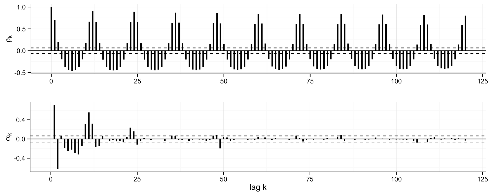
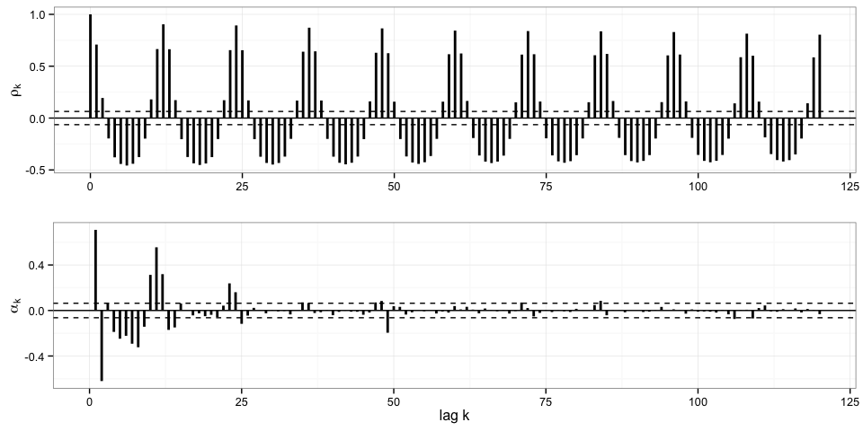
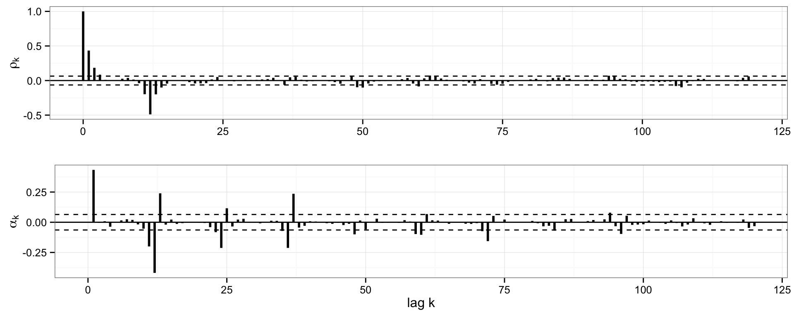

Figure 1: 79 years of mean monthly flow data for the Ganges in real space (top) and log space (bottom).
Figure 2: A series of boxplots showing the center and spread of the dataset by month. The signal appears highly seasonal.
| Mean (CFS) | SD (CFS) | CV | |
|---|---|---|---|
| January | 2537 | 1124 | 0.443 |
| February | 2014 | 843.5 | 0.4189 |
| March | 1663 | 765.6 | 0.4603 |
| April | 1519 | 648.7 | 0.427 |
| May | 1758 | 574.2 | 0.3266 |
| June | 3988 | 1618 | 0.4057 |
| July | 18760 | 5860 | 0.3123 |
| August | 37200 | 8042 | 0.2162 |
| September | 35990 | 8399 | 0.2334 |
| October | 17370 | 6489 | 0.3735 |
| November | 6505 | 2291 | 0.3522 |
| December | 3762 | 1657 | 0.4406 |
| Overall | 11090 | 13460 | 1.214 |
The monthly time series is not even first-order stationary becuase the mean exhibits strong seasonality. However, the highly seasonal structure suggests that we may be able to make the time series stationary though differencing.
Figure 3: Ganges monthly mean flows with i+12 observations highlighted.
Figure 4: Total and partial correlograms.
